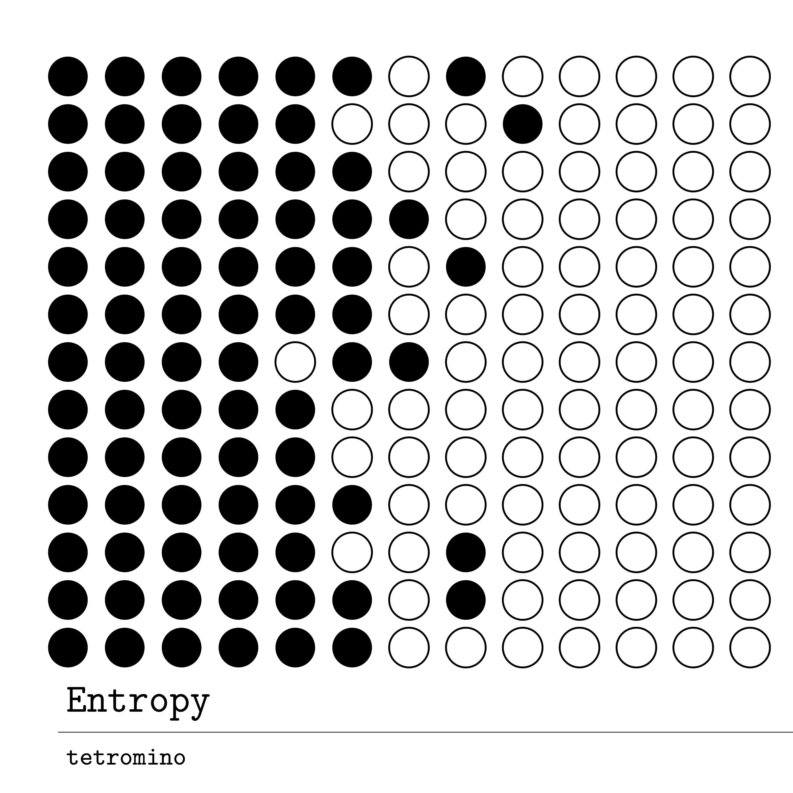

tetromino
electronic music
tetromino is the name I release music under. The term comes from tetrominoes, one class of polyominoes: geometric objects formed by joining equal squares edge-to-edge. A lot of electronic music is built from repeating measures and modular patterns, especially in 4/4, so the connection felt natural without needing to be too literal about it. Loops lock together, sequences shift against each other, small changes reorganize the whole structure. That relationship between rigor and emergence is probably the closest thing to a unifying thread in the music I make.
Sonically, my music drifts towards EDM, IDM, ambient, experimental, and more rhythmically driven material. I'm usually more interested in melodies, but recent ventures into modular synthesis have drawn me more into texture and spatial detail.
Releases

the irreversible rhythm of everything scattering into the unknown
Tracks
view all →progressive house 128 Am
Gear & Tools
Production splits between a DAW-based setup, a modular eurorack system, and analog synthesizers. Most tracks involve some combination of hardware synthesis, software instruments, and a lot of time on mixing and sound design.
Along the development of my own music, I've needed highly niche software/plug-ins (most often for live performance and clocking). Perhaps one day I'll setup a plug-in/M4L page..